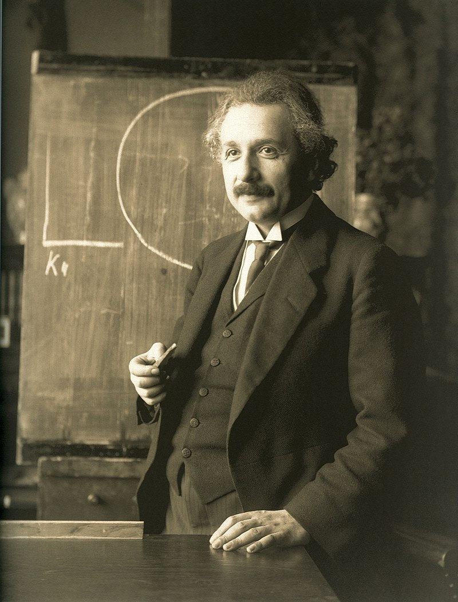

Alan Mathison Turing OBE FRS (/ˈtjʊərɪŋ/; 23 June 1912 – 7 June 1954) was an English mathematician, computer scientist, logician, cryptanalyst, philosopher, and theoretical biologist.[6][7] Turing was highly influential in the development of theoretical computer science, providing a formalisation of the concepts of algorithm and computation with the Turing machine, which can be considered a model of a general-purpose computer.[8][9][10] Turing is widely considered to be the father of theoretical computer science and artificial intelligence.[11]
Born in Maida Vale, London, Turing was raised in southern England. He graduated at King's College, Cambridge with a degree in mathematics. Whilst he was a fellow at Cambridge, he published a proof demonstrating that some purely mathematical yes–no questions can never be answered by computation and defined a Turing machine, and went on to prove the halting problem for Turing machines is undecidable. In 1938, he obtained his PhD from the Department of Mathematics at Princeton University. During the Second World War, Turing worked for the Government Code and Cypher School (GC&CS) at Bletchley Park, Britain's codebreaking centre that produced Ultra intelligence. For a time he led Hut 8, the section that was responsible for German naval cryptanalysis. Here, he devised a number of techniques for speeding the breaking of German ciphers, including improvements to the pre-war Polish bombe method, an electromechanical machine that could find settings for the Enigma machine. Turing played a crucial role in cracking intercepted coded messages that enabled the Allies to defeat the Nazis in many crucial engagements, including the Battle of the Atlantic.[12][13] Due to the problems of counterfactual history, it is hard to estimate the precise effect Ultra intelligence had on the war,[14] but Professor Jack Copeland has estimated that this work shortened the war in Europe by more than two years and saved over 14 million lives.[12]
After the war, Turing worked at the National Physical Laboratory, where he designed the Automatic Computing Engine. The Automatic Computing Engine was one of the first designs for a stored-program computer. In 1948, Turing joined Max Newman's Computing Machine Laboratory, at the Victoria University of Manchester, where he helped develop the Manchester computers[15] and became interested in mathematical biology. He wrote a paper on the chemical basis of morphogenesis[1] and predicted oscillating chemical reactions such as the Belousov–Zhabotinsky reaction, first observed in the 1960s. Turing was prosecuted in 1952 for homosexual acts; the Labouchere Amendment of 1885 had mandated that "gross indecency" was a criminal offence in the UK. He accepted chemical castration treatment, with DES, as an alternative to prison. Turing died in 1954, 16 days before his 42nd birthday, from cyanide poisoning. An inquest determined his death as a suicide, but it has been noted that the known evidence is also consistent with accidental poisoning.
Despite these accomplishments, he was never fully recognised in his home country during his lifetime because much of his work was covered by the Official Secrets Act. In 2009, following an Internet campaign, British Prime Minister Gordon Brown made an official public apology on behalf of the British government for "the appalling way he was treated". Queen Elizabeth II granted Turing a posthumous pardon in 2013. The "Alan Turing law" is now an informal term for a 2017 law in the United Kingdom that retroactively pardoned men cautioned or convicted under historical legislation that outlawed homosexual acts.[16] Turing has an extensive legacy with statues of him, many things named after him including an annual award for computer science innovations. He is due to appear on the Bank of England £50 note, to be released in June 2021. A 2019 BBC series, as voted by the audience, named him the greatest person of the 20th century.

Albert Einstein (/ˈaɪnstaɪn/ EYEN-styne;[4] German: [ˈalbɛʁt ˈʔaɪnʃtaɪn] (About this soundlisten); 14 March 1879 – 18 April 1955) was a German-born theoretical physicist,[5] widely acknowledged to be one of the greatest physicists of all time. Einstein is known for developing the theory of relativity, but he also made important contributions to the development of the theory of quantum mechanics. Relativity and quantum mechanics are together the two pillars of modern physics.[3][6] His mass–energy equivalence formula E = mc2, which arises from relativity theory, has been dubbed "the world's most famous equation".[7] His work is also known for its influence on the philosophy of science.[8][9] He received the 1921 Nobel Prize in Physics "for his services to theoretical physics, and especially for his discovery of the law of the photoelectric effect",[10] a pivotal step in the development of quantum theory. His intellectual achievements and originality resulted in "Einstein" becoming synonymous with "genius".[11]
In 1905, a year sometimes described as his annus mirabilis ('miracle year'), Einstein published four groundbreaking papers besides his work at the Swiss patent office in Bern, Switzerland.[12] These outlined the theory of the photoelectric effect, explained Brownian motion, introduced special relativity, and demonstrated mass-energy equivalence. Einstein thought that the laws of classical mechanics could no longer be reconciled with those of the electromagnetic field, which led him to develop his special theory of relativity. He then extended the theory to gravitational fields; he published a paper on general relativity in 1916, introducing his theory of gravitation. In 1917, he applied the general theory of relativity to model the structure of the universe.[13][14] He continued to deal with problems of statistical mechanics and quantum theory, which led to his explanations of particle theory and the motion of molecules. He also investigated the thermal properties of light and the quantum theory of radiation, which laid the foundation of the photon theory of light. However, for much of the later part of his career, he worked on two ultimately unsuccessful endeavors. First, despite his great contributions to quantum mechanics, he opposed what it evolved into, objecting that nature "does not play dice".[15] Second, he attempted to devise a unified field theory by generalizing his geometric theory of gravitation to include electromagnetism. As a result, he became increasingly isolated from the mainstream of modern physics.
Einstein was born in the German Empire, but moved to Switzerland in 1895, forsaking his German citizenship (subject of the Kingdom of Württemberg)[note 1] the following year. In 1897, at the age of 17, he enrolled in the four-year mathematics and physics teaching diploma program at the Swiss Federal polytechnic school (later renamed as ETH Zurich) in Zürich, he graduated in 1900. In 1901, he acquired Swiss citizenship, which he kept for the rest of his life. In 1905, he was awarded a PhD by the University of Zurich. In 1914, Einstein moved to Berlin in order to join the Prussian Academy of Sciences and the Humboldt University of Berlin, and to direct the 1917 created Kaiser Wilhelm Institute for Physics; he also became a German citizen again – Prussian this time. In 1933, while Einstein was visiting the United States, Adolf Hitler came to power. Einstein did not return to Germany because he objected to the policies of the newly elected Nazi-led government.[16] He settled in the United States and became an American citizen in 1940.[17] On the eve of World War II, he endorsed a letter to President Franklin D. Roosevelt alerting him to the potential German nuclear weapons program and recommending that the US begin similar research. Einstein supported the Allies, but he generally denounced the idea of nuclear weapons.

Elon Reeve Musk FRS (/ˈiːlɒn/ EE-lon; born June 28, 1971) is a business magnate, industrial designer, and engineer.[3] He is the founder, CEO, CTO, and chief designer of SpaceX; early stage investor,[b] CEO, and product architect of Tesla, Inc.; founder of The Boring Company; co-founder of Neuralink; and co-founder and initial co-chairman of OpenAI. A centibillionaire, Musk is one of the richest people in the world.
Musk was born to a Canadian mother and South African father and raised in Pretoria, South Africa. He briefly attended the University of Pretoria before moving to Canada aged 17 to attend Queen's University. He transferred to the University of Pennsylvania two years later, where he received dual bachelor's degrees in economics and physics. He moved to California in 1995 to attend Stanford University but decided instead to pursue a business career, co-founding the web software company Zip2 with his brother Kimbal. The startup was acquired by Compaq for $307 million in 1999. Musk co-founded online bank X.com that same year, which merged with Confinity in 2000 to form the company PayPal and was subsequently bought by eBay in 2002 for $1.5 billion.
In 2002, Musk founded SpaceX, an aerospace manufacturer and space transport services company, of which he is CEO, CTO, and lead designer. In 2004, he joined electric vehicle manufacturer Tesla Motors, Inc. (now Tesla, Inc.) as chairman and product architect, becoming its CEO in 2008. In 2006, he helped create SolarCity, a solar energy services company and current Tesla subsidiary. In 2015, he co-founded OpenAI, a nonprofit research company that promotes friendly artificial intelligence. In 2016, he co-founded Neuralink, a neurotechnology company focused on developing brain–computer interfaces, and founded The Boring Company, a tunnel construction company. Musk has also proposed the Hyperloop, a high-speed vactrain transportation system.
Musk has been the subject of criticism due to unorthodox or unscientific stances and highly publicized controversies. In 2018, he was sued for defamation by a diver who advised in the Tham Luang cave rescue; a California jury ruled in favor of Musk. In the same year, he was sued by the US Securities and Exchange Commission (SEC) for falsely tweeting that he had secured funding for a private takeover of Tesla. He settled with the SEC, temporarily stepping down from his chairmanship and accepting limitations on his Twitter usage. Musk has spread misinformation about the COVID-19 pandemic and has received criticism from experts for his other views on such matters as artificial intelligence and public transport.

Jeffrey Preston Bezos (/ˈbeɪzoʊs/ BAY-zohss;[3] né Jorgensen; born January 12, 1964)[4] is an American internet entrepreneur, industrialist, media proprietor, and investor. Bezos is the founder and CEO[a] of the multi-national technology company Amazon. He is the richest person in the world according to Bloomberg's Billionaires Index.[1]
Born in Albuquerque and raised in Houston and later Miami, Bezos graduated from Princeton University in 1986. He holds a degree in electrical engineering and computer science. He worked on Wall Street in a variety of related fields from 1986 to early 1994. Bezos founded Amazon in late 1994, on a cross-country road trip from New York City to Seattle. The company began as an online bookstore and has since expanded to a wide variety of other e-commerce products and services, including video and audio streaming, cloud computing, and artificial intelligence. It is currently the world's largest online sales company, the largest Internet company by revenue, and the world's largest provider of virtual assistants[6] and cloud infrastructure services through its Amazon Web Services branch.
Bezos founded the aerospace manufacturer and sub-orbital spaceflight services company Blue Origin in 2000. Blue Origin's New Shepard vehicle reached space in 2015, and afterwards successfully landed back on Earth. The company has upcoming plans to begin commercial suborbital human spaceflight.[7] He also purchased the major American newspaper The Washington Post in 2013 for $250 million, and manages many other investments through his Bezos Expeditions venture capital firm.
The first centibillionaire on the Forbes wealth index,[8] Bezos was named the "richest man in modern history" after his net worth increased to $150 billion in July 2018.[9] In August 2020, according to Forbes, he had a net worth exceeding $200 billion.[10] In 2020 during the COVID-19 pandemic, Bezos's wealth grew by approximately $24 billion.[11]
On February 2, 2021, Bezos announced that he would step down as the CEO of Amazon sometime in the third quarter of 2021, and transition into the role of executive chairman. He is due to be replaced as CEO by Andy Jassy, the chief of Amazon's cloud computing division.[12][13]